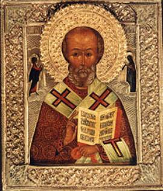

A Variety of Legends
Part 1
After the death of Nicholas, the line between fact
and fantasy blurred and a fabulous series of legends and miracles sprang into
being. St. Nicholas’ many legends were reported in sermons by St. John
Chrysostom and St. Bonaventure. While we can’t prove the truth of most of the
legends, they all testify to his relationship with the Lord and to the high
regard in which his contemporaries held him.
The Legend of the Crippled Woman
Nicholas’ first miracle is one of kindness and
occurs during his childhood. When he’s going to school, he meets a crippled
woman in the street. Legend has it that he looks on her with such love and
tenderness that she immediately becomes well and walks free.
The Legend of the Miser
While Nicholas is distributing gifts one Christmas
Eve, he finds himself with an empty purse and no food or lodging for the night.
He knocks at a door and is admitted, only to find he’s in the home of a
notorious miser. This man recognizes Nicholas and has heard of his generosity.
Thinking he’ll be richly rewarded, he welcomes him and gives him the best bed
in the house.
Nicholas asks him, “How did it happen, that you’re as rich you are and your neighbors scarcely keep from starving?”
“Because I keep my money and help myself,” chuckles
the old miser.
Little more is said, and Nicholas goes to bed. In
the morning as he’s ready to leave, Nicholas tells the miser that he has no
money to give him, but he’ll bestow his blessing. “Whatever you first start
doing this day,” says Nicholas, “you’ll continue doing until night,” and he
departed.
As the miser contemplates ways to make even more
money, a poor woman comes to beg. His mind distracted, the miser opens his
purse and flings a coin to the woman, who thanks him and leaves. Having started
giving away money, he has to continue doing it until nightfall! The news
quickly spreads. Poor people throng to his house and none leave without a coin.
It’s the best Christmas the people ever have. From that day on, the old man is
no longer a miser. This change of heart is the blessing bestowed upon him by
Nicholas.
The Legend of the Badly Burned Child
Amid all the people who have shown up for the
ordination of St. Nicholas is a woman in dire need. She brings into the church
a child that has fallen into the fire and has been badly burned. Bishop
Nicholas makes the sign of the cross over the child and instantly restores it
to health. That is the first of his miracles that showed the interest that he
took in children.
The Legend of the Boiled Baby
Another story, found in Wace’s Life of St. Nicholas, tells of a woman who rushes from her home
upon hearing the new bishop is chosen. In her excitement she leaves her baby
waiting for his bath in a pot of water over the fire. When she remembers, the
terrified mother beseeches Bishop Nicholas to save him. He sends her home with
his blessing. There she finds the baby unharmed and playing happily with the
bubbles from the boiling water.
The Legend of the Statue of St. Nicholas
Vandals from Africa invade Calabria in southern
Italy, despoil it, and take a great many prisoners. One of the pirates, who’s
also a tax collector, finds a valuable statue of St. Nicholas in a Christian
home. A captive has told him about the miracles this Saint performs, so he
brings the statue home with him. One day, when he has to make a journey, he
leaves it in charge of his possessions. Upon his return, he finds that, in
spite of this, his house has been robbed. Furious, he strikes the statue,
threatening to throw it into the fire if his goods aren’t returned to him. St.
Nicholas appears to the robbers just as they are dividing the loot. He commands
them to return it, saying that otherwise he’ll give them up to justice, and
they’ll certainly hang. Terrified, the thieves bring back what they’ve stolen.
This makes such an impression on the man that he begins to sing, praising St.
Nicholas. He and his entire family are convicted by the Holy Spirit, give their
lives to Christ, and erect a chapel in St. Nicholas’ honor.
The Legend of Demetrios
Then there is a certain Demetrios, who is traveling
by ship from Constantinople for the Feast of St. Nicholas. He is flung
overboard in the middle of the night by a violent storm. He prays to St.
Nicholas and then loses consciousness. When he comes to, he is in his own
house, surrounded by neighbors who know nothing of what has happened. His clothes
are dripping wet.
The Legend of the Other Nicholas
Then there is the story of the misadventure of a
certain monk, also named Nicholas. Having left Constantinople to carry out a
mission, his boat is almost sinking, and he calls to his patron Saint to help;
St. Nicholas appears to him, walking on the water, and promises to save him.
Immediately the sea grows calm.
The Carol of the Three-Hundred Ships

The aid afforded by St. Nicholas to mariners in distress also forms the subject
of a story sung in a popular Serbian carol, in which there’s much in evidence
the peculiar charm of the folktale. The story goes that all the Saints,
festively assembled, are drinking wine. When the cup, out of which each drinks
in turn, is passed to St. Nicholas, he’s too sleepy to hold it, and lets it
drop. St. Elias shakes him by the arm and arouses him. “Oh! I beg the pardon of
the company,” says the sleepy Nicholas, “but I have been very busy and I was
absent from your festival. The sea was rough, and I had to give my help to
three hundred ships that were in danger.”
Thought to Ponder: St. Nicholas never claimed
credit for himself but, rather, told them to thank the Lord. In the words of
St. John the Forerunner (the Baptist), “He must increase, but I must decrease.”
(John 3:30 NKJV)
Thought to Discuss Around the Dinner Table: When people see the image (eikon) of God working in us, do we claim the credit (making sure people know how wonderful we are) or do we give the glory to God (Who is working in our lives)?
A Variety of Legends
Part 1